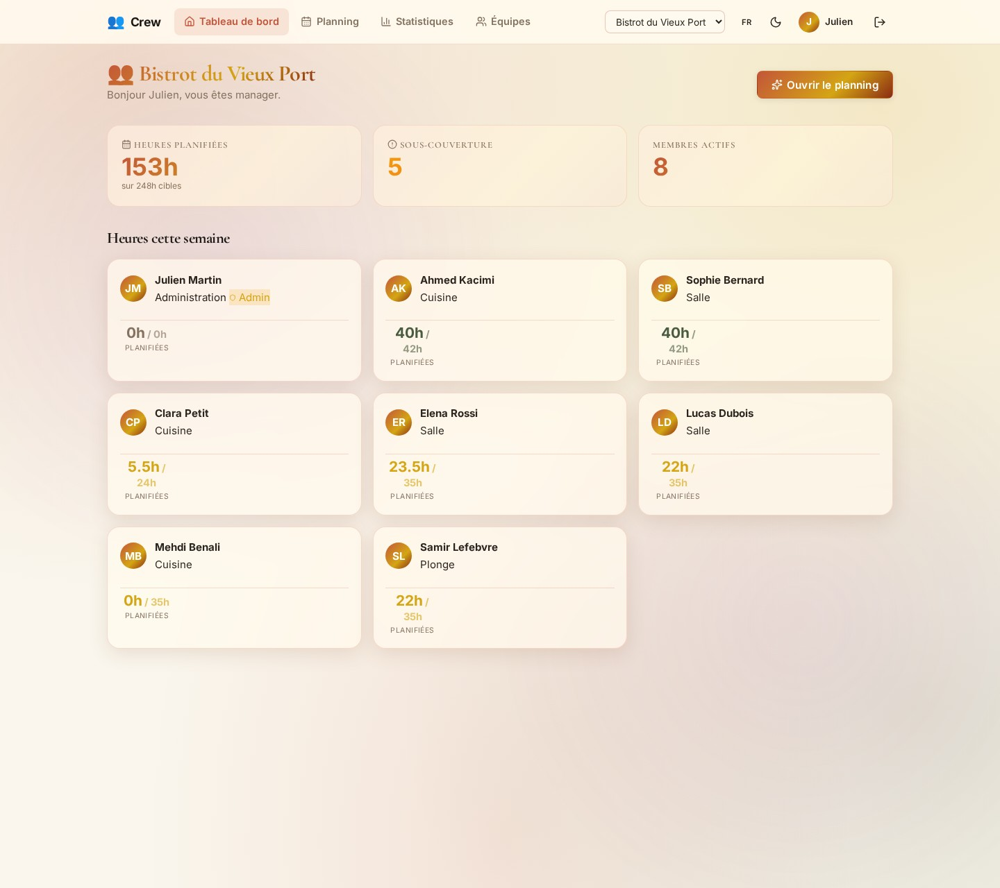
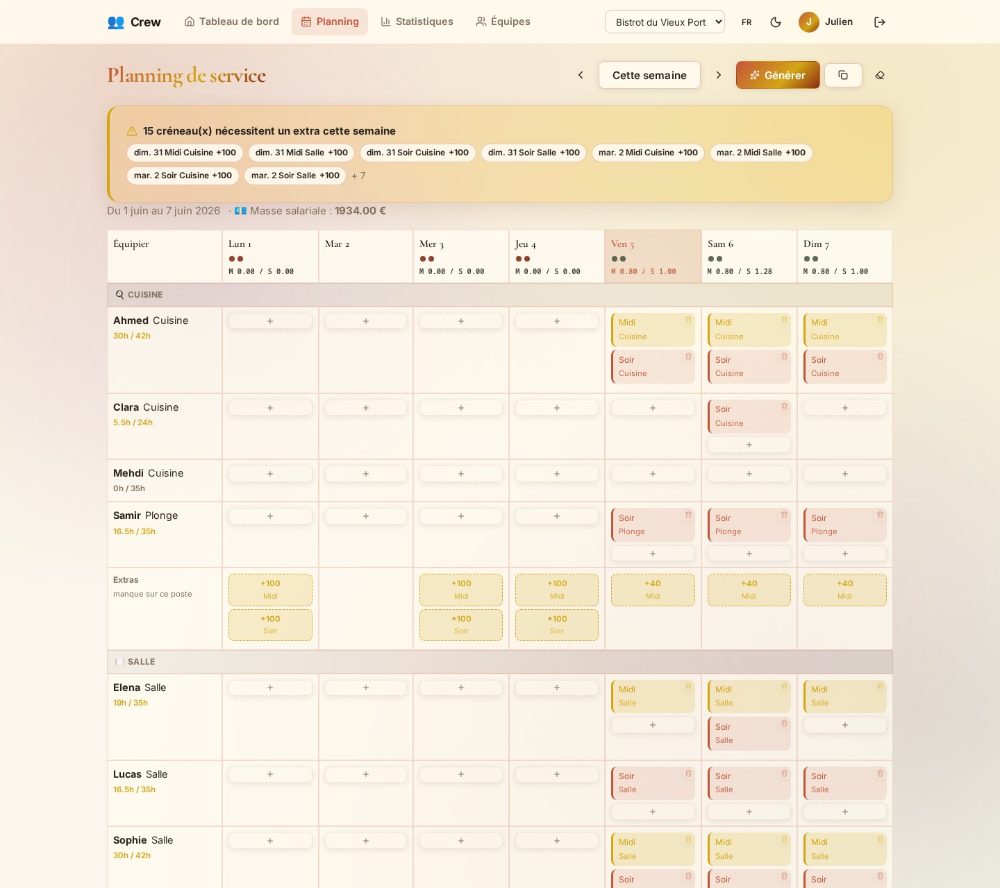
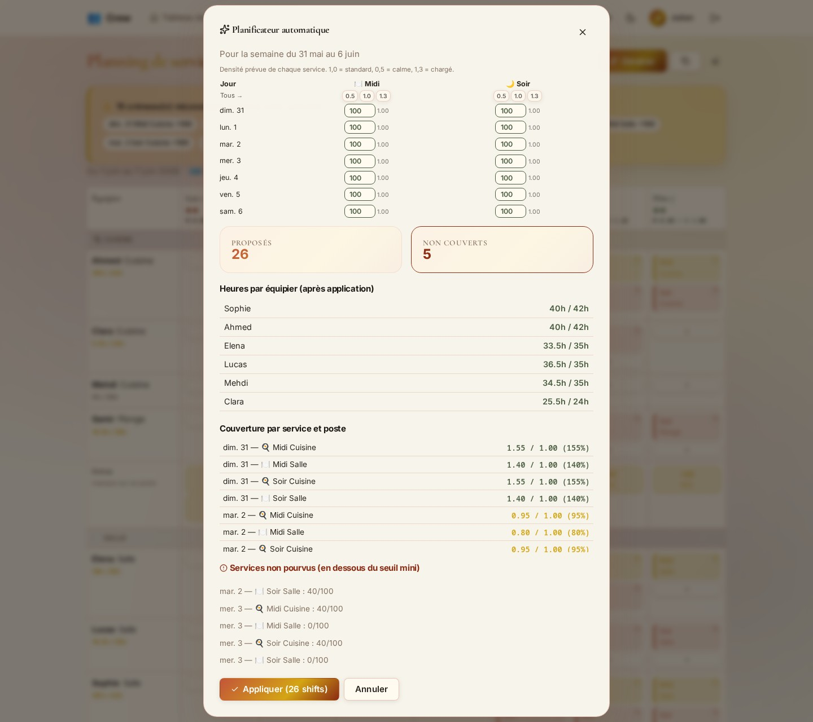
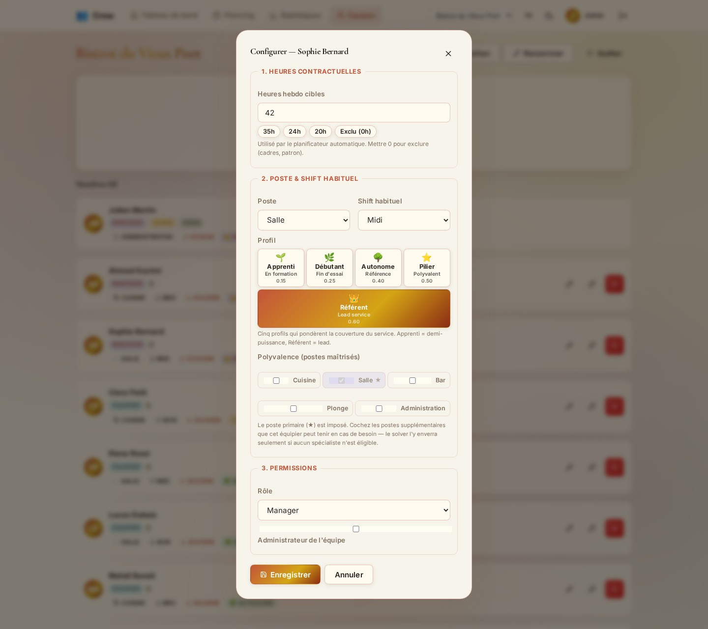
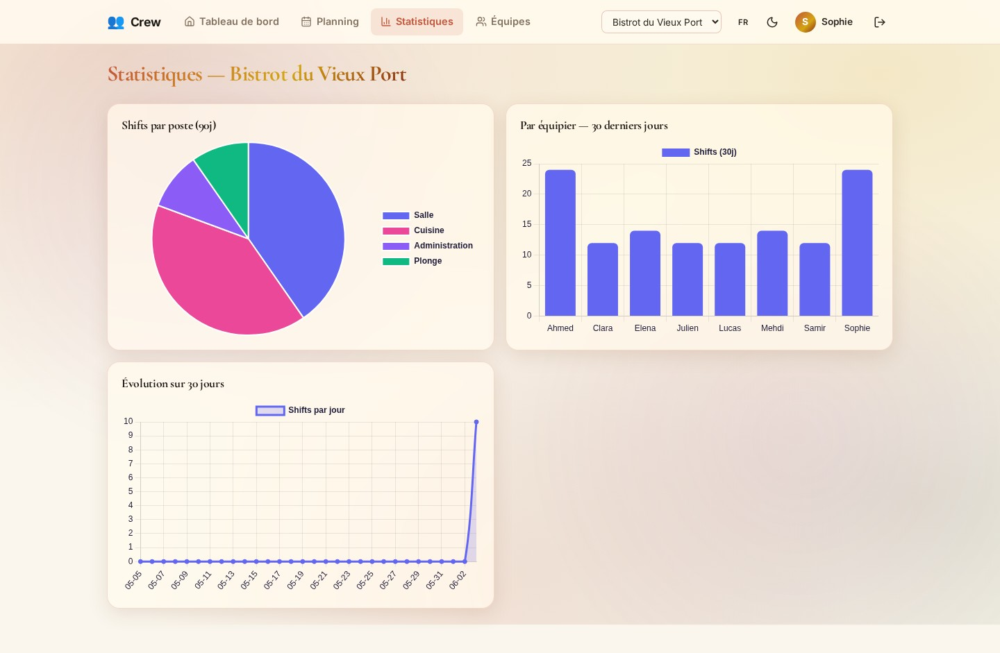

J'ai choisi de réaliser Crew, une application web responsive de planification de services d'équipe. L'idée vient d'un constat simple et concret : dans la restauration, l'hôtellerie ou le retail, le manager passe un temps considérable à bâtir chaque semaine un planning équitable, qui respecte les heures contractuelles de chacun, la couverture nécessaire de chaque service et le droit du travail. Ce travail est répétitif, source d'erreurs et difficile à diffuser proprement aux équipiers.
Crew répond à ce besoin avec un solver d'auto-planning : le manager configure une fois le profil de chaque équipier (poste, créneau habituel, heures cibles), puis génère en un clic un planning hebdomadaire équilibré qu'il peut ajuster avant publication. Chaque équipier reçoit ensuite ses services directement dans le calendrier de son téléphone via un flux iCal personnel, sans aucune application à installer.
J'ai mené ce projet de façon individuelle et autonome, du cahier des charges aux maquettes, puis au développement front-end et back-end, jusqu'au déploiement en production. Il m'a confronté à des défis techniques réels — modélisation de la base, conception d'un algorithme d'affectation sous contraintes, sécurisation de l'API — qui sont au cœur des compétences du titre et que ce dossier détaille.
Le titre RNCP 37674 est structuré en deux activités-types. La sécurité n'est pas un bloc séparé : elle est exigée à l'intérieur de chacune (« application web ou web mobile sécurisée »). Chaque compétence ci-dessous renvoie à la section du dossier qui en apporte la preuve.
Crew est une application web responsive de planification de services d'équipe, dédiée à tout responsable gérant une rotation de shifts : restauration, hôtellerie, retail, santé, sécurité, événementiel.
Compte personnel (email + mot de passe). Peut créer une équipe ou en rejoindre une via un code d'invitation, et appartenir à plusieurs équipes (ex : un serveur travaillant dans deux restaurants).
Groupe d'utilisateurs partageant un planning. Chaque membre a un rôle (manager ou
équipier). Un manager administrateur peut inviter, valider et retirer des membres.
NULL ou
0 = membre exclu du planning automatique (cadres, patron).Créneau de travail planifié pour un équipier donné. Contrainte d'unicité
(user_id, date, shift_type) : pas de double-planning sur le même créneau d'un jour.
Algorithme greedy à score multicritères :
Le manager voit la proposition dans un modal de preview (heures par membre, slots non couverts, total) avant de l'appliquer.
| En tant que | Je souhaite | Afin de |
|---|---|---|
| Utilisateur | m'inscrire et me connecter | accéder à l'application en sécurité |
| Utilisateur | créer une équipe ou en rejoindre une par code | partager un planning |
| Manager | configurer le profil d'un équipier (poste, créneau, heures) | alimenter le solver |
| Manager | générer un planning automatique | gagner du temps et de l'équité |
| Manager | prévisualiser puis ajuster la proposition | garder le contrôle final |
| Manager | cloner ou effacer une semaine | accélérer la mise en place |
| Manager admin | inviter, valider, retirer des membres | administrer l'équipe |
| Manager admin | réinitialiser le mot de passe d'un membre | dépanner un équipier |
| Équipier | consulter mes prochains shifts | m'organiser |
| Équipier | m'abonner au flux iCal | recevoir mes services dans mon téléphone |
| Manager | consulter les statistiques d'équipe | piloter l'activité |
Accès commun (tous rôles) : profil, abonnement iCal, consultation du planning. Accès manager : édition des shifts, smart planner. Accès admin : gestion des membres et de l'équipe.
Le « Produit Minimum Viable » vise une planification fiable et conforme :
Hors MVP (évolutions) : statistiques avancées, multi-skill, cost-aware, alertes science-based (livrées ensuite — voir section Évolutions).
| Action | Manager admin | Manager | Équipier |
|---|---|---|---|
| Inviter / approuver un membre | ✓ | ✗ | ✗ |
| Modifier rôle / poste / heures | ✓ | ✗ | ✗ |
| Retirer un membre | ✓ | ✗ | ✗ |
| Régénérer le code d'invitation | ✓ | ✗ | ✗ |
| Réinitialiser le mot de passe d'un membre | ✓ | ✗ | ✗ |
| Créer / éditer / supprimer un shift | ✓ | ✓ | ✗ |
| Générer / appliquer un smart planning | ✓ | ✓ | ✗ |
| Voir tout le planning de l'équipe | ✓ | ✓ | ✓ |
| Consulter les statistiques équipe | ✓ | ✓ | ✗ |
| Voir ses propres shifts | ✓ | ✓ | ✓ |
| S'abonner au flux iCal | ✓ | ✓ | ✓ |





Base MariaDB 10.11. Source de vérité : back/migrations/*.sql.
users| Donnée | Désignation | Type | Contrainte |
|---|---|---|---|
| id | Identifiant utilisateur | INT | PK, AUTO_INCREMENT |
| Adresse e-mail | VARCHAR(255) | NOT NULL, UNIQUE | |
| password_hash | Mot de passe haché (bcrypt) | VARCHAR(255) | NOT NULL |
| first_name | Prénom | VARCHAR(80) | NOT NULL |
| last_name | Nom | VARCHAR(80) | NOT NULL |
| calendar_token | Token iCal opaque | CHAR(48) | NOT NULL, UNIQUE |
| created_at | Date de création | DATETIME | DEFAULT CURRENT_TIMESTAMP |
teams| Donnée | Désignation | Type | Contrainte |
|---|---|---|---|
| id | Identifiant équipe | INT | PK, AUTO_INCREMENT |
| name | Nom de l'équipe | VARCHAR(120) | NOT NULL |
| invite_code | Code d'invitation (CREW-XXXX-XXXX) | CHAR(14) | NOT NULL, UNIQUE |
| created_by | Créateur | INT | FK → users(id), NOT NULL |
| created_at | Date de création | DATETIME | DEFAULT CURRENT_TIMESTAMP |
team_members (association N-N enrichie)| Donnée | Désignation | Type | Contrainte |
|---|---|---|---|
| team_id | Équipe | INT | PK, FK → teams(id) ON DELETE CASCADE |
| user_id | Utilisateur | INT | PK, FK → users(id) ON DELETE CASCADE |
| role | Rôle | ENUM(manager, equipier) | DEFAULT 'equipier' |
| is_admin | Administrateur | BOOLEAN | DEFAULT FALSE |
| status | Statut d'adhésion | ENUM(active, pending) | DEFAULT 'pending' |
| poste | Poste habituel | ENUM(cuisine…administration) | NULL |
| shift_default | Créneau habituel | ENUM(matin…nuit) | NULL |
| weekly_hours_target | Heures cibles/semaine | INT | NULL (0/NULL = exclu solver) |
| joined_at | Date d'adhésion | DATETIME | DEFAULT CURRENT_TIMESTAMP |
shifts| Donnée | Désignation | Type | Contrainte |
|---|---|---|---|
| id | Identifiant du shift | INT | PK, AUTO_INCREMENT |
| team_id | Équipe | INT | FK → teams(id) ON DELETE CASCADE |
| user_id | Équipier planifié | INT | FK → users(id) ON DELETE CASCADE |
| date | Jour du service | DATE | NOT NULL |
| shift_type | Type de créneau | ENUM(matin…nuit) | NOT NULL |
| start_time | Heure de début | TIME | NULL (dérivé du type sinon) |
| end_time | Heure de fin | TIME | NULL |
| poste | Poste tenu (renfort possible) | ENUM(cuisine…administration) | NOT NULL |
| note | Note libre | TEXT | NULL |
| created_by | Manager créateur | INT | FK → users(id) ON DELETE SET NULL |
| created_at | Création | DATETIME | DEFAULT CURRENT_TIMESTAMP |
| updated_at | Mise à jour | DATETIME | ON UPDATE CURRENT_TIMESTAMP |
| Règle | Mécanisme |
|---|---|
| Email unique | UNIQUE sur users.email |
| Token iCal unique | UNIQUE sur users.calendar_token |
| Code d'invitation unique | UNIQUE sur teams.invite_code |
| Pas de double-planning | UNIQUE (user_id, date, shift_type) sur shifts |
| Suppression équipe ⇒ cascade des shifts | FK team_id ON DELETE CASCADE |
| Historisation du créateur d'un shift | FK created_by ON DELETE SET NULL |
Index principaux : users(email), users(calendar_token),
teams(invite_code), team_members(user_id),
team_members(team_id, poste) (solver), shifts(user_id, date),
shifts(team_id, date).
Migrations appliquées séquentiellement par npm run migrate :
001_users → 002_teams → 003_team_members → 004_member_planning_fields → 005_shifts, puis
006-012 (évolutions, voir dernière section).
Toutes les routes sont préfixées par /api. Sauf /auth/* et
/calendar/*, toutes exigent un header Authorization: Bearer <jwt>.
| Méthode | Chemin | Description | Accès |
|---|---|---|---|
| POST | /auth/register | Création de compte | Public |
| POST | /auth/login | Connexion → JWT | Public |
| GET | /users/me | Profil connecté | Auth |
| PATCH | /users/me | Modifier prénom/nom | Auth |
| POST | /users/me/password | Changer son mot de passe | Auth |
| Méthode | Chemin | Description | Accès |
|---|---|---|---|
| GET | /teams | Mes équipes | Auth |
| POST | /teams | Créer une équipe | Auth |
| GET | /teams/:id | Détail + membres | Membre |
| POST | /teams/join | Rejoindre via code | Auth |
| POST | /teams/:id/approve/:userId | Valider un membre | Admin |
| PATCH | /teams/:id/members/:userId | Modifier rôle/poste/heures | Admin |
| DELETE | /teams/:id/members/:userId | Retirer un membre | Admin |
| POST | /teams/:id/regenerate-code | Régénérer le code | Admin |
| Méthode | Chemin | Description | Accès |
|---|---|---|---|
| GET | /shifts?team_id&from&to | Lister les shifts | Membre |
| GET | /shifts/upcoming | Mes 10 prochains shifts | Auth |
| POST / PUT / DELETE | /shifts(/:id) | CRUD d'un shift | Manager |
| GET | /shifts/summary | Heures/membre + slots non couverts + coût | Manager |
| POST | /shifts/generate-plan | Proposer un planning (preview) | Manager |
| POST | /shifts/apply-plan | Créer en base les shifts proposés | Manager |
| POST | /shifts/clone-week | Dupliquer une semaine | Manager |
| DELETE | /shifts/clear-week | Vider une semaine | Manager |
| Méthode | Chemin | Description | Accès |
|---|---|---|---|
| GET | /stats/dashboard | Tableau de bord | Auth |
| GET | /stats/charts?team_id | Stats équipe (poste, membre, timeline) | Manager |
| GET | /calendar/:token | Flux iCal de tous les shifts | Public (token) |
| GET | /calendar/:token/team/:teamId.ics | Flux iCal d'une équipe | Public (token) |
Ces extraits illustrent les compétences clés du titre. Chacun est commenté pour expliquer le choix technique et la mesure de sécurité associée.
Chaque route protégée passe par ce middleware. Il refuse l'accès si le header est absent/mal formé, vérifie la signature du token et n'expose au reste de l'application que l'identifiant utilisateur. Compétence II.C — sécurité back.
// back/src/middleware/auth.js
import { verifyToken } from '../services/jwt.service.js';
import { unauthorized } from '../utils/httpError.js';
export function authRequired(req, res, next) {
const header = req.headers.authorization;
if (!header || !header.startsWith('Bearer ')) {
return next(unauthorized()); // 401 : pas de token
}
try {
const payload = verifyToken(header.slice(7)); // vérifie la signature HS256
req.user = { id: payload.sub }; // on n'expose que l'id
next();
} catch {
next(unauthorized('Token invalide ou expiré'));
}
}Les mots de passe ne sont jamais stockés en clair : bcrypt (cost 10) produit un hash salé. La comparaison est faite par bcrypt lui-même (résistant au timing). Compétence II.C.
// back/src/services/password.service.js
import bcrypt from 'bcrypt';
const ROUNDS = 10;
export function hashPassword(plain) {
return bcrypt.hash(plain, ROUNDS); // salt + hash automatiques
}
export function comparePassword(plain, hash) {
return bcrypt.compare(plain, hash);
}Au-delà de l'authentification, l'autorisation est vérifiée par middleware sur chaque endpoint sensible : appartenance à l'équipe, rôle manager, statut administrateur. Compétence II.C.
// back/src/middleware/teamAccess.js
export async function requireTeamMember(req, res, next) {
const teamId = Number(req.params.teamId || req.body.team_id);
if (!teamId) return next(forbidden('team_id manquant'));
const member = await teamMemberModel.findByTeamAndUser(teamId, req.user.id);
if (!member || member.status !== 'active')
return next(forbidden("Vous n'êtes pas membre de cette équipe"));
req.teamMember = member;
next();
}
export function requireManager(req, res, next) {
if (!req.teamMember || req.teamMember.role !== 'manager')
return next(forbidden('Réservé aux managers'));
next();
}La couche Model n'écrit jamais de SQL par concaténation : toutes les valeurs passent par des
paramètres liés ? (driver mysql2), ce qui neutralise l'injection SQL.
Compétence II.B — accès aux données + sécurité.
// back/src/models/user.model.js
export const userModel = {
async findByEmail(email) {
const [rows] = await pool.query(
'SELECT * FROM users WHERE email = ?', [email]); // paramètre lié
return rows[0] || null;
},
async create({ email, password_hash, first_name, last_name, calendar_token }) {
const [result] = await pool.query(
`INSERT INTO users (email, password_hash, first_name, last_name, calendar_token)
VALUES (?, ?, ?, ?, ?)`,
[email, password_hash, first_name, last_name, calendar_token]);
return result.insertId;
},
};Toute donnée venant du client est validée côté serveur avant traitement (format email, longueur du mot de passe, champs requis). La validation lève une erreur 400 structurée. Compétence II.C.
// back/src/validators/auth.validator.js
const EMAIL_RE = /^[^\s@]+@[^\s@]+\.[^\s@]+$/;
export function validateRegister(body) {
const errors = {};
const { email, password, first_name, last_name } = body || {};
if (!email || !EMAIL_RE.test(email) || email.length > LIMITS.EMAIL_MAX)
errors.email = 'Email invalide';
if (!password || password.length < LIMITS.PASSWORD_MIN)
errors.password = `Mot de passe d'au moins ${LIMITS.PASSWORD_MIN} caractères`;
if (!first_name) errors.first_name = 'Prénom requis';
if (!last_name) errors.last_name = 'Nom requis';
if (Object.keys(errors).length) throw badRequest('Champs invalides', errors);
return { email, password, first_name, last_name };
}Le composant métier central : pour chaque créneau à couvrir, le solver filtre les candidats éligibles (compétence, disponibilité, plafonds légaux HCR jamais relâchés), puis les classe par un score multicritères. Compétence II.C — composant métier.
// back/src/services/plannerSolver.js (extrait de findBest)
.filter((m) => {
if (!m.weekly_hours_target) return false; // exclu du solver
if (!canFill(m, slot.poste)) return false; // compétence/poste
if (wouldBeWeek > HCR_WEEKLY_MAX) return false; // 48 h/sem — mur légal
if (dayHours + shiftDur > hcrDailyCap(m.poste)) return false; // plafond/jour
if (countConsecutive([...userDays, slot.date]) > MAX_CONSECUTIVE_DAYS)
return false; // max 6 jours consécutifs
return true;
})
.map((m) => {
const deficit = m.weekly_hours_target - hours[m.user_id].planned;
let score = deficit * 10; // priorité : qui manque d'heures
if (m.shift_default === slot.service) score += 5; // créneau habituel
if (m.poste === slot.poste) score += 3; // poste habituel
if (m.level === 'chef') score += 2; // séniorité
score -= (shiftCost(m, slot.service, cfg) / 100) * COST_PENALTY_WEIGHT; // coût
return { member: m, score };
})
.sort((a, b) => b.score - a.score)[0]?.member ?? null;La sécurité est traitée à chaque niveau de l'application. Le tableau ci-dessous met en regard les principaux risques (référentiel OWASP Top 10) et les mesures concrètes implémentées dans Crew.
| Risque OWASP | Mesure dans Crew | Emplacement |
|---|---|---|
| A01 — Broken Access Control | RBAC par middleware sur chaque endpoint (membre / manager / admin) ; vérification d'appartenance à l'équipe avant toute action. | middleware/teamAccess.js |
| A02 — Cryptographic Failures | Mots de passe hachés avec bcrypt (cost 10, salt) ; jamais stockés ni renvoyés en clair ; HTTPS forcé en production. | services/password.service.js |
| A03 — Injection | Requêtes SQL exclusivement préparées (paramètres liés mysql2) ; aucune concaténation de chaîne dans les requêtes. | models/*.model.js |
| A04 — Insecure Design | Validation systématique côté serveur ; principe du moindre privilège ; le token client ne contient que l'id (aucun secret). | validators/* |
| A05 — Security Misconfiguration | CORS restrictif (liste blanche d'origines via FRONT_ORIGIN) ;
trust proxy pour la détection d'IP derrière Fly ; secrets en variables
d'environnement. |
app.js, config/env.js |
| A07 — Identification & Auth. Failures | JWT signé HS256 avec expiration ; rate-limiting des tentatives de connexion et d'inscription ; messages d'erreur sans fuite d'information. | middleware/auth.js, rateLimit.js |
| A09 — Logging & Monitoring | Journalisation des requêtes (requestLogger) et gestion centralisée des erreurs (errorHandler) pour la traçabilité. | middleware/requestLogger.js |
ProtectedRoute redirige vers la connexion
si aucun token valide n'est présent.// back/src/middleware/rateLimit.js
export const loginLimiter = rateLimit({
windowMs: 15 * 60 * 1000,
max: isProd ? 20 : 1000, // 20 essais / 15 min en prod : rempart anti brute-force
message: { error: 'Trop de tentatives, réessayez dans 15 minutes' },
});Couverture manuelle exécutée avant chaque mise en production et avant la soutenance, complétée par un jeu de données de démo (seed) couvrant chaque rôle.
| Rôle | Mot de passe | |
|---|---|---|
| julien.patron@bistrot.fr | Patron (admin) | motdepasse123 |
| sophie.manager@bistrot.fr | Manager salle | motdepasse123 |
| ahmed.chef@bistrot.fr | Chef cuisine | motdepasse123 |
| elena.serveuse@bistrot.fr | Serveuse | motdepasse123 |
| samir.plonge@bistrot.fr | Plongeur | motdepasse123 |
| # | Scénario | Résultat attendu | Statut |
|---|---|---|---|
| 1.1 | Inscription valide (mdp ≥ 8) | Redirection dashboard, JWT stocké | OK |
| 1.2 | Inscription email déjà utilisé | Erreur 409, message clair | OK |
| 1.3 | Mot de passe trop court | Erreur 400 (validateur) | OK |
| 1.4 | Connexion valide | Redirection dashboard | OK |
| 1.5 | Mauvais mot de passe | 401, pas de fuite d'info | OK |
| 1.6 | Rate limit login (excès de tentatives) | Réponse 429 | OK |
| 1.7 | Token expiré sur route protégée | 401, redirect login | OK |
| 1.8 | Changement de mot de passe | Succès, ré-auth requis | OK |
| # | Scénario | Résultat attendu | Statut |
|---|---|---|---|
| 2.1 | Création d'équipe | Équipe créée, créateur = admin | OK |
| 2.2 | Adhésion par code valide | Membre en statut pending | OK |
| 2.3 | Adhésion par code invalide | Erreur 404 | OK |
| 2.4 | Équipier tente d'éditer un shift | 403 (RBAC) | OK |
| 2.5 | Non-membre accède au détail équipe | 403 | OK |
| # | Scénario | Résultat attendu | Statut |
|---|---|---|---|
| 3.1 | Génération sur le seed | Preview cohérente, slots non couverts signalés | OK |
| 3.2 | Respect du plafond 48 h/semaine | Aucun équipier au-dessus de 48 h | OK |
| 3.3 | Max 6 jours consécutifs | Aucune affectation au 7ᵉ jour consécutif | OK |
| 3.4 | Application du plan | Shifts créés en base, unicité respectée | OK |
| 3.5 | Clone-week / clear-week | Semaine dupliquée / vidée | OK |
| # | Scénario | Résultat attendu | Statut |
|---|---|---|---|
| 4.1 | Abonnement au flux iCal perso | Shifts visibles dans le calendrier | OK |
| 4.2 | Alarme VALARM | Notification 2 h avant le service | OK |
| 4.3 | Token erroné | Flux vide / 404, pas de fuite | OK |
Suite prévue : ajouter une couche de tests automatisés (Vitest + supertest) sur le solver (plafonds HCR, scoring) et l'authentification, pour compléter cette couverture manuelle.
Pour les décisions techniques importantes, j'applique une démarche de veille : formuler la question, comparer 2-3 sources fiables (dont anglophones), évaluer selon des critères, tester, puis décider — en gardant une alternative de secours.
Le cœur de Crew est l'affectation d'équipiers à des créneaux sous contraintes (couverture cible, heures contractuelles, plafonds légaux HCR). C'est un problème classique de staff scheduling / rostering. Deux familles d'approches existent :
Je me suis appuyé sur deux références de recherche opérationnelle en anglais :
Ernst, A. T., Jiang, H., Krishnamoorthy, M. & Sier, D. (2004). « Staff scheduling and rostering: A review of applications, methods and models », European Journal of Operational Research 153(1):3-27.
Bard, J. F., Binici, C. & deSilva, A. H. (2003). « Staff scheduling at the United States Postal Service », Computers & Operations Research 30(5):745-771.
Cette littérature établit que (1) la planification du personnel se modélise classiquement par minimisation de la masse salariale sous contrainte de couverture, et que (2) le coût horaire est l'objectif dominant dans plus de 95 % des modèles appliqués recensés. Le MIP donne l'optimum global, mais au prix d'un temps de calcul non borné et d'une « boîte noire » difficile à expliquer à un manager.
| Critère | Solveur exact (MIP) | Heuristique greedy |
|---|---|---|
| Qualité de la solution | Optimum global | Quasi-optimale (bonne en pratique) |
| Temps de réponse | Variable, peut exploser | Temps réel, borné |
| Explicabilité | Faible (boîte noire) | Forte (score lisible) |
| Dépendance externe | Solveur tiers à intégrer | Aucune (JS pur) |
| Gestion des contraintes dures | Native | Par filtrage explicite |
J'ai retenu une heuristique greedy avec scoring multicritères, pour trois raisons :
La même philosophie que Bard et al. (couverture imposée, coût pénalisé) est donc conservée, sous une forme heuristique adaptée à un usage interactif. La limite assumée — une solution quasi-optimale plutôt qu'optimale — est acceptable car le manager ajuste toujours la proposition avant publication.
Au-delà du périmètre MVP, le projet a intégré six dimensions métier supplémentaires, documentées et adossées à la littérature peer-reviewed (annexe scientifique, 12 références).
Chaque équipier porte un niveau (junior / confirmé / chef) auquel l'UI applique 5 profils nommés (Apprenti 0,15 → Référent 0,60). Tous les poids sont < 1 ; chaque poste vise une couverture de 1,00 (= 100 %).
La table teams reçoit des coefficients par niveau, une capacité de référence
(max_couverts) et des idéaux de couverture par service et par poste, éditables par le
manager. Les anciennes constantes en dur sont supprimées.
team_members.coef_override permet de surcharger le poids d'un équipier au cas par cas.
L'API summary expose la couverture par poste.
teams.closed_days_mask (bitmask 7 bits) remplace l'ancienne constante. La modale
Smart Planner expose un tableau (date × service) où le manager déclare la densité prévue
(Calme 0,5 / Normal 1,0 / Chargé 1,3). Le solver scale l'idéal par cette densité.
team_members.skills_mask (bitmask des postes maîtrisés). Le solver lit ce masque en
priorité ; le scoring conserve un bonus +3 pour le poste primaire, si bien qu'un
équipier polyvalent n'est mobilisé hors de sa spécialité que si aucun spécialiste primaire n'est
éligible. Application du théorème de la chaîne courte (Jordan & Graves 1995,
Management Science) : 2-3 postes/équipier captent ~95 % des gains d'une flexibilité totale.
Trois colonnes *_rate sur teams + rate_override, alignées
sur les minima de la Convention HCR 2026 (Junior 12 €, Confirmé 14 €, Chef 19 €). Le solver intègre
une pénalité de coût dans le score, calibrée pour rester sous-dominante face au déficit hebdomadaire
— le coût ne discrimine qu'entre candidats à besoins équivalents. La masse salariale prévisionnelle
(laborCostTotal) s'affiche dans l'en-tête de la page Planning.
| # | Sujet | Tables impactées |
|---|---|---|
| 006 | Niveaux Junior / Confirmé / Chef | team_members |
| 007 | Paramètres d'équipe (coef, idéal, capacité) | teams |
| 008 | Coef override personnel | team_members |
| 009 | Normalisation [0;1] des poids et idéaux | teams, team_members |
| 010 | Jours d'ouverture (closed_days_mask) | teams |
| 011 | Polyvalence (skills_mask) | team_members |
| 012 | Taux horaires + override | teams, team_members |
Justification scientifique complète et bibliographie : annexe
JUSTIFICATION_SCIENTIFIQUE.md (12 références peer-reviewed et institutionnelles).
La réalisation de Crew m'a permis de transformer un besoin métier concret — la planification d'équipe sous contraintes — en une application web complète, fonctionnelle et déployée en production.
Ce projet m'a confronté à l'ensemble des compétences du titre : conception d'une base de données relationnelle et de ses contraintes d'intégrité, développement d'une API REST structurée en MVC, réalisation d'une interface React responsive et internationalisée, et — au cœur du projet — la conception d'un composant métier non trivial, le solver d'auto-planning, qui applique des règles légales strictes tout en optimisant l'équité et le coût.
J'ai particulièrement soigné la sécurité à chaque niveau : authentification JWT, hachage bcrypt, contrôle d'accès par rôle sur chaque endpoint, requêtes préparées, validation systématique des entrées, CORS restrictif et rate-limiting. Ces choix sont documentés et mis en regard du référentiel OWASP.
À chaque décision technique importante, j'ai adopté une démarche de veille — comparer des sources fiables, dont anglophones, avant de trancher — comme l'illustre le choix entre solveur exact et heuristique greedy.
Le projet reste perfectible : j'identifie comme suites prioritaires l'ajout d'une couche de tests automatisés, des notifications push, et une suggestion automatique de la densité de service à partir de l'historique. Ces limites sont assumées et tracées.
Au terme de ce travail, je retiens surtout une montée en compétence sur la conception d'un système complet — du modèle de données à la mise en production — et la capacité à mener un projet technique exigeant de façon autonome et rigoureuse, dans un cadre proche d'un contexte professionnel.